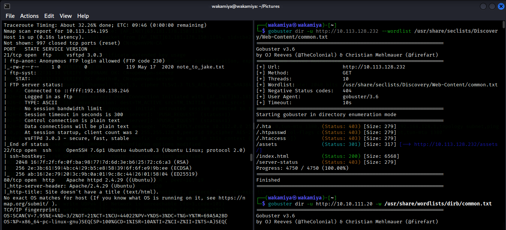
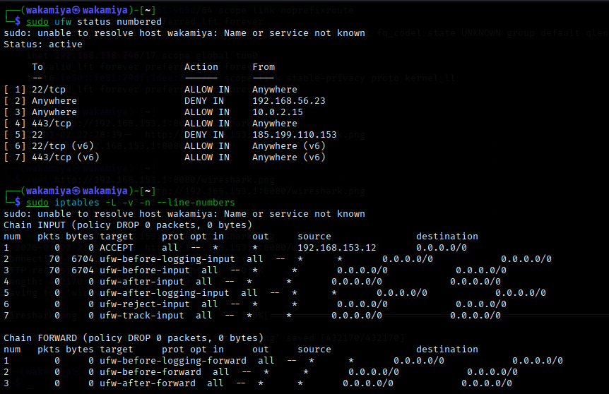
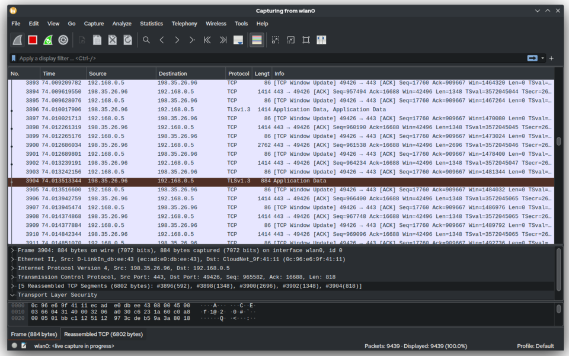
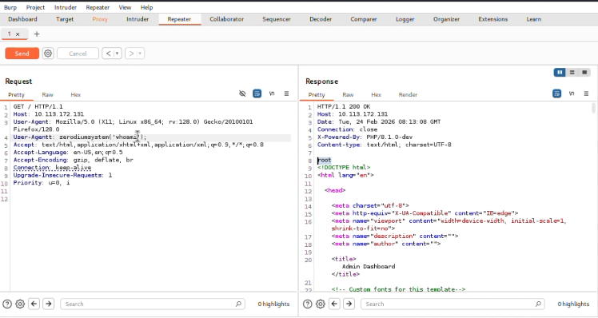

Cybersecurity Portfolio
Cybersecurity Analyst specializing in Security Operations Center (SOC) operations, threat monitoring, and defensive security strategies.
Building expertise in real-time threat detection, incident response, and security analytics. Committed to protecting organizational assets through proactive defense and continuous monitoring.
Professional Summary
I am a cybersecurity student with a dedicated focus on Security Operations Center (SOC) operations and defensive security methodologies. My primary objective is to develop expertise in real-time threat detection, security monitoring, and incident response.
Through structured lab environments and CTF-style exercises, I have built practical experience in analyzing security events, identifying anomalous behavior, and understanding attack patterns from a defender's perspective.
My background includes foundational knowledge in penetration testing, which provides valuable insight into attacker methodologies and strengthens my defensive capabilities. This dual perspective enables me to anticipate threats and implement more effective security controls.
I bring strong analytical thinking, meticulous documentation practices, and a commitment to continuous learning—essential qualities for success in SOC environments.
SOC operations, threat detection, and incident response fundamentals with emphasis on proactive defense strategies.
Structured problem-solving with strong documentation skills and attention to detail in security analysis.
Penetration testing knowledge provides attacker perspective, enhancing defensive capabilities and threat understanding.
Technical Skills
Specialized capabilities in defensive security with supporting technical foundations.
Real-time monitoring of security events and alert triage in SIEM environments.
Parsing and analyzing system logs to identify security incidents and anomalies.
Fundamental IR procedures including containment, eradication, and recovery.
Packet inspection and flow analysis to detect malicious network activity.
Foundational knowledge of attack vectors and exploitation techniques.
System management, shell scripting, and security hardening.
Firewall configuration, IDS/IPS concepts, and secure architecture.
Understanding of encryption, hashing, and secure protocols.
Hands-On Experience
Applied learning through structured environments and security challenges.

Conducted network reconnaissance to identify exposed services and potential misconfigurations. Discovered open FTP service with anonymous access and analyzed web server configuration to assess attack surface exposure.

Implemented host-based firewall configurations using both iptables and UFW to understand rule hierarchy, policy enforcement, and traffic filtering behavior. Simulated IP blocking and controlled access scenarios to evaluate defensive network posture.

Real-time flow analysis and anomaly detection

Observed differential server responses based on modified User-Agent values, indicating potential trust-based access control weakness.
Interactive
Type help to see available commands.
Get in Touch
I am currently seeking internship opportunities in Security Operations Centers. If you are looking for a dedicated analyst with strong defensive security skills, I would welcome the opportunity to discuss how I can contribute to your team.
wkm.naufal@gmail.com
github.com/AllMightyLethal
linkedin.com/in/wakamiyanaufal